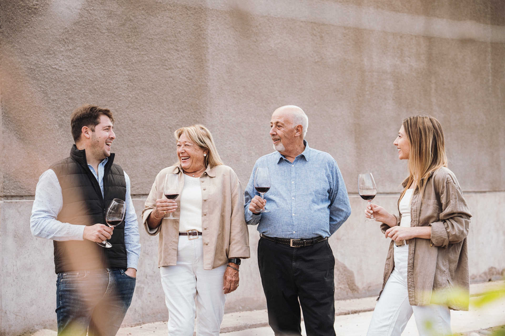

Desde 1983, los Cicchitti cultivan viñedos en Mendoza con una convicción: que el buen vino nace del cuidado, la tierra y el tiempo.
Crecemos en tecnología y viñedos para satisfacer la creciente y exigente demanda de nuestros consumidores, sin perder nunca la esencia familiar que nos define.
José Antonio "Pepe" Cicchitti emprendió su carrera en el mundo del vino con verdadera obsesión por la calidad, junto a su esposa Silvia R. Marti.
En los albores del vino moderno argentino, ampliamos y remodelamos el establecimiento, sumando año tras año tecnología y capacidad a nuestra bodega.
La bodega se convirtió en la primera del país en ganar la Gran Medalla de Oro en el exterior, en el Vino Forum de la OIV (Organización Internacional de la Viña y el Vino), por nuestro espumante Soigné elaborado con el método champenoise.
Con un concepto de crecimiento sostenido, la bodega se consolidó sobre las bases de la producción de vinos finos, con la calidad como norte y la tecnología como medio.
La nueva generación de Cicchitti, José y Mercedes, se sumaron a la bodega para seguir llevando adelante el trabajo familiar con la misma pasión que la fundó.
La empresa amplía sus zonas de influencia, sumando viñedos en Valle de Uco, Luján de Cuyo, Maipú y el este mendocino, para expresar la diversidad del terruño mendocino en cada botella.
Los fundadores que en 1983 emprendieron esta historia con obsesión por la calidad y amor por la tierra mendocina. Su visión y esfuerzo son la base de todo lo que vino después.
Desde 2011 llevan adelante el trabajo familiar con la misma pasión que lo fundó. Incorporaron nuevos viñedos, tecnología y mercados, sin perder nunca la esencia artesanal que define a la bodega.
Con tecnología de última generación y viñedos en cuatro regiones de Mendoza, la bodega continúa creciendo con la misma convicción de siempre: el buen vino nace del cuidado, la tierra y el tiempo.
«Captarás placer, sensaciones y recuerdos.»— Familia Cicchitti